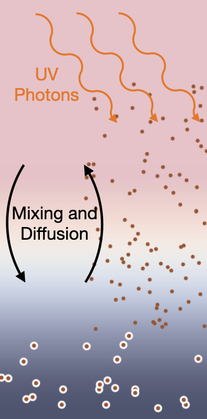
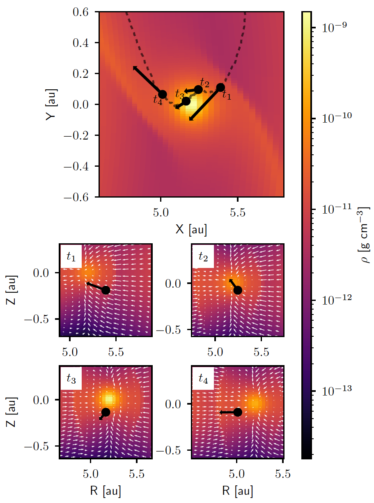

Current Research
Disk chemistry and dyanmic feedbacks

Protoplanetary disks, the disk of gas and solids around a star where planets form, are constantly evolving. Growth transport of gas and solids can lead to dramatic changes in the observed chemistry and the composition of the planetary bodies that form within. I have created a new software, CANDY, to explore the combined effects of active gas phase Chemistry ANd DYnamics of solid particles. I am exploring implications of this feedback in meteoritics, disk observations, and exoplanet compositions.
See:
Van Clepper et al. 2022Ciesla et al. 2022
Solid dynamics in structured disks

As massive planets grow, they carve out a gap in the surrounding disk, halting the radial transport of solids. I'm interested in studying the detailed trajectory of these solids has they move both radially and vertically through a disk with a growing massive planet. I have developed a new software, ParTrace, to track the trajectories of small solids as they interact with the 3D gas flows created by an embedded giant planet. In two papers, we showed that while giant planet can halt the inward drift of larger pebbles, small grains can "filter" past the giant planet. This filtering efficiency depends on the disk viscosity and planet mass, and by comparing with meteorites, we can better understand out own presolar nebula, and how it compares with protoplanetary disks around other stars.
We also show that as small dust grains filter past the giant planet, they are lofted near the surface of the disk, where ice sublimation occurs. This may enrich the disk with volatiles near the growing giant planet, enriching its atmosphere with volatiles relative to the surrounding disk. We name this the dust recycling and icy volatile enhancement (DRIVE) effect.
See:
Price, Van Clepper & Ciesla 2024Van Clepper, Price & Ciesla 2025
Van Clepper et al. 2025